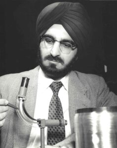

1926-2020
Narinder Singh Kapany.
A life devoted to light.
He helped guide light through glass—and opened new possibilities for communication.

The courage to keep asking.
Born in Moga, Punjab, in 1926, Narinder Singh Kapany grew up with a curiosity about the behaviour of light. He studied in Dehradun and graduated from Agra University before serving in the Indian Ordnance Factories Service. In 1952, he moved to Imperial College London to pursue research in optics, earning his doctorate in 1955.
At Imperial College, Kapany worked with Harold Hopkins on transmitting images through bundles of optical fibres. In 1953, their experiments achieved much clearer image transmission than earlier methods. Alongside other advances in the field, their work helped establish fibre optics as a practical new area of research.
Kapany coined the term “fiber optics” in a 1960 Scientific American article and became one of the field’s leading researchers and advocates. His interests extended to communications, lasers, biomedical instruments, solar energy, and pollution monitoring. Over his career, he held more than 120 patents and published over 100 scientific papers.
Beyond the laboratory, he founded technology companies, taught at universities, and supported education and the arts. As the founding chairman of the Sikh Foundation, he helped preserve and share Sikh heritage. He died in 2020, aged 94, and received India’s Padma Vibhushan posthumously in 2021.
A lifetime of discovery.
- 1926 Born in Moga, Punjab
- 1953 Transmits images through fibres
- 1955 Earns doctorate in optics
- 1960 Coins the term "fiber optics"
- 1967 Founds the Sikh Foundation
- 2021 Receives Padma Vibhushan posthumously
❝ The important thing is to be a man of the world. That's what I have tried to be, and to a small extent, succeeded. But I like to do things for people. ❞
Discovery is only the beginning.
Kapany's research helped lay foundations for technologies that carry information with light. Beyond science, his support for education, entrepreneurship, and Sikh art showed how innovation and cultural heritage can enrich one another.